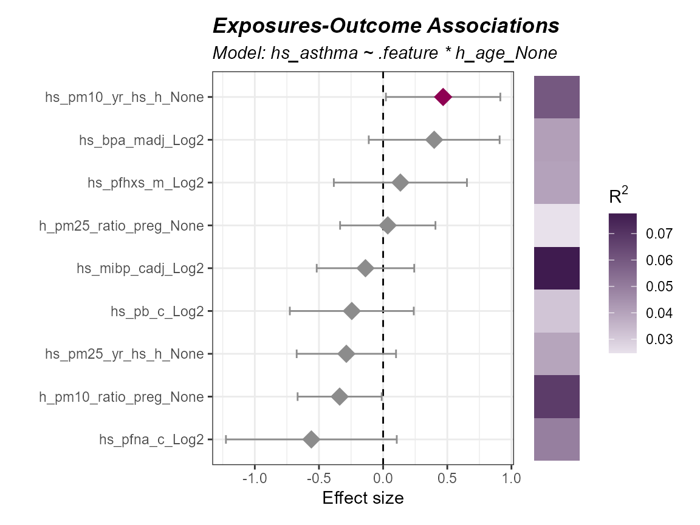
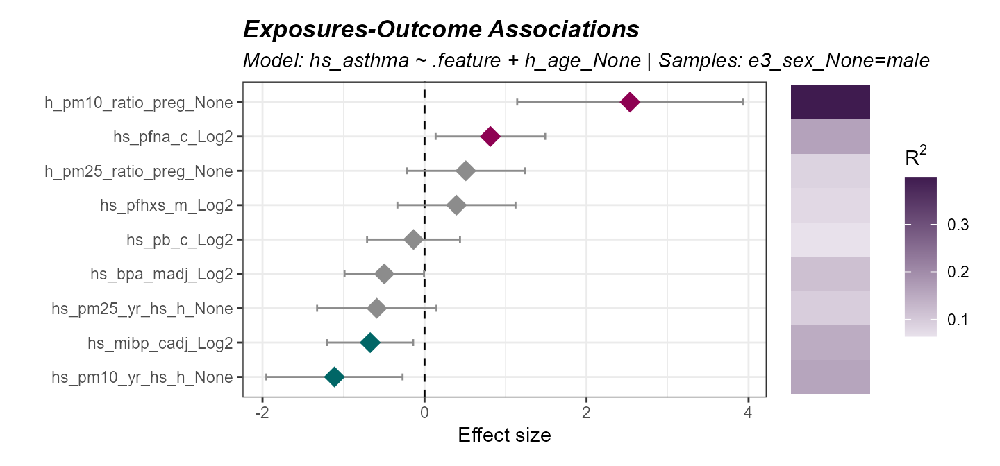
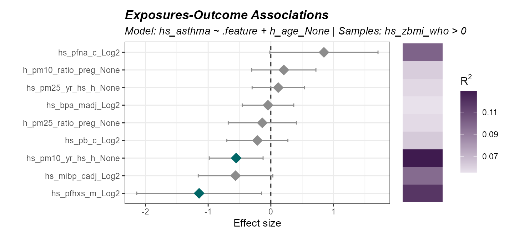
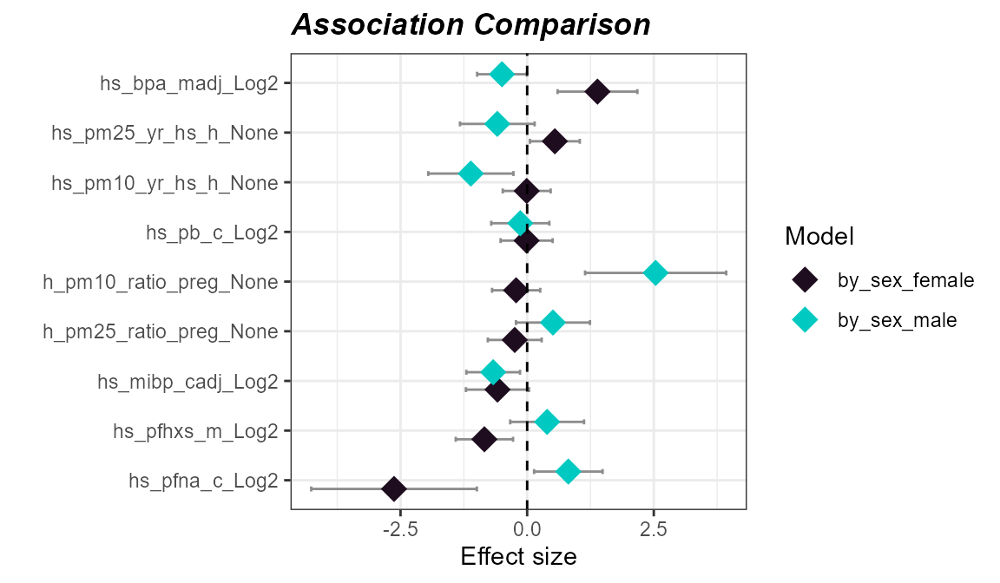

- Run an exposome-wide association study (ExWAS) to test many exposures against a single outcome.
- Fit interaction models to test whether an exposure-outcome relationship depends on another variable.
- Stratify models or subset samples to examine specific subgroups.
- Compare effect estimates across models.
Prerequisites
We covered exposure preprocessing in a previous vignette. Here is the quick start code from that vignette to get you going:
Click to expand code
# Load Libraries
library(tidyverse)
library(tidyexposomics)
# Load example data
data("tidyexposomics_example")
# Create exposomic set object
expom <- create_exposomicset(
codebook = tidyexposomics_example$annotated_cb,
exposure = tidyexposomics_example$meta
)
# Grab exposure variables
exp_vars <- tidyexposomics_example$annotated_cb |>
filter(category %in% c(
"aerosol",
"main group molecular entity",
"polyatomic entity"
)) |>
pull(variable) |>
as.character()
# Impute missing values
expom <- run_impute_missing(
exposomicset = expom,
exposure_impute_method = "missforest",
exposure_cols = exp_vars
)
# Check variable normality
expom <- run_normality_check(
exposomicset = expom,
action = "add"
)
# Transform variables
expom <- transform_exposure(
exposomicset = expom,
transform_method = "boxcox_best",
exposure_cols = exp_vars
)Exposome-wide association study (ExWAS)
Inspired by the concept of genome-wide association studies, or GWAS,
the ExWAS is a high-throughput way of identifying many exposures with an
association to an outcome. The run_association allows us to
see which exposure variables are associated with our outcome,
hs_asthma, which is a 0 or 1, so we set the family to
binomial. If the variable was continuous, we’d usually set
it to gaussian. Just one more note: since we are running
this model on many different exposures, we use .feature as
a placeholder:
# Perform ExWAS
expom <- run_association(
exposomicset = expom,
formula = hs_asthma ~ .feature,
source = "exposures",
feature_set = exp_vars,
action = "add",
family = "binomial"
)We can visualize these associations using the
plot_association function and set our p-value filter to
color associations below that threshold, here we set it to 0.3 just to
demonstrate the coloring, but we suggest using the p_adjust
column for filter_col and a cutoff of 0.05:
# Plot the association forest plot
plot_association(
exposomicset = expom,
effect = "main",
source = "exposures",
terms = exp_vars,
filter_thresh = 0.3,
up_col = "#8E0152",
down_col = "#006666",
filter_col = "p.value",
r2_col = "r2"
)
Interaction Modeling
Sometimes, the relationship between an exposure an outcome depends on another variable. For this folks tend to leverage interaction modeling. Let’s look at how we would see if the the relationship between asthma and an exposure depends on age:
run_association(
exposomicset = expom,
overwrite = TRUE,
formula = hs_asthma ~ .feature * h_age_None,
source = "exposures",
feature_set = exp_vars,
action = "add",
family = "binomial"
) |>
plot_association(
effect = "h_age_None",
source = "exposures",
terms = exp_vars,
filter_thresh = 0.3,
up_col = "#8E0152",
down_col = "#006666",
filter_col = "p.value",
r2_col = "r2"
)
Notice, how we switched effect = "main" to
effect = "h_age_None" so that we could grab the interaction
results.
Stratifying Models
We may also want to run a model on a portion of our data, like say just male patients:
expom |>
run_association(
formula = hs_asthma ~ .feature + h_age_None,
source = "exposures",
overwrite = T,
feature_set = exp_vars,
family = "binomial",
strata = "e3_sex_None",
name = "by_sex"
) |>
plot_association(
effect = "main",
source = "exposures",
model = "by_sex_male",
terms = exp_vars,
filter_thresh = 0.3,
up_col = "#8E0152",
down_col = "#006666",
filter_col = "p.value",
r2_col = "r2"
)
We can also filter our object with the subset argument.
Let’s examine the association in children with a higher BMI z-score:
expom |>
run_association(
formula = hs_asthma ~ .feature + h_age_None,
source = "exposures",
overwrite = T,
feature_set = exp_vars,
family = "binomial",
subset = hs_zbmi_who > 0,
name = "high_bmi"
) |>
plot_association(
effect = "main",
source = "exposures",
model = "high_bmi",
terms = exp_vars,
filter_thresh = 0.3,
up_col = "#8E0152",
down_col = "#006666",
filter_col = "p.value",
r2_col = "r2"
)
Comparing models
Now sometimes we want to compare the results of different models.
Here we demonstrate how to make many different models using two
approaches: (1) specifying a list of formulas, and (2) using the
strata or subset functionality. This will
create results for four different models:
expom <- expom |>
run_association(
formula = list(
crude = hs_asthma ~ .feature,
adj = hs_asthma ~ .feature + h_age_None),
source = "exposures",
overwrite = TRUE,
feature_set = exp_vars,
family = "binomial"
) |>
run_association(
formula = hs_asthma ~ .feature + h_age_None,
source = "exposures",
feature_set = exp_vars,
family = "binomial",
strata = "e3_sex_None",
name = "by_sex"
)To see what model results are available you can use the following:
association_models(expom)## # A tibble: 5 × 8
## source model formula subset stratum family n_samples n_features
## <chr> <chr> <chr> <chr> <chr> <chr> <int> <int>
## 1 exposures default hs_asthma … NA NA binom… 48 9
## 2 exposures crude hs_asthma … NA NA binom… 48 9
## 3 exposures adj hs_asthma … NA NA binom… 48 9
## 4 exposures by_sex_female hs_asthma … NA female binom… 28 9
## 5 exposures by_sex_male hs_asthma … NA male binom… 20 9Now let’s demonstrate how to compare two models, here we will compare effect estimates for males and females:
expom |>
compare_association(
"exposures",
models = c("by_sex_female",
"by_sex_male")) |>
plot_association_comparison(
type = "forest")
We could also choose to visualize it using a scatter plot:
expom |>
compare_association(
"exposures",
models = c("by_sex_female",
"by_sex_male")) |>
plot_association_comparison(
type = "scatter")
Here we see that the effect estimates are not correlated with one another, suggesting that the relationship between asthma and exposure differs by sex.